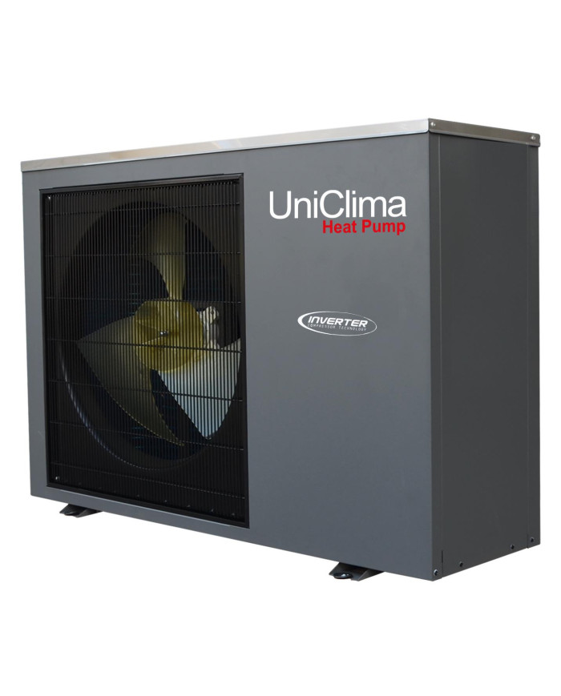

Qué es y cómo funciona
Una bomba de calor no produce calor quemando combustible: lo traslada. Toma el calor que hay en el aire exterior, incluso cuando hace frío, y lo entrega al agua o al aire de la vivienda. La electricidad se usa solo para mover ese calor.
Por eso entrega varias unidades de calor por cada unidad de electricidad que consume. Un rendimiento típico (COP) está entre 3 y 4: por cada kWh eléctrico, se obtienen entre 3 y 4 kWh de calor.
Puede alimentar losa radiante, radiadores de baja temperatura y agua caliente, y muchos modelos también enfrían en verano.
Equipos para tu casa o cabaña
Algunos de los equipos que instalamos. Te ayudamos a elegir el adecuado según la vivienda y el sistema de calefacción.


Con qué sistemas se conecta
La bomba de calor entrega su energía a la losa radiante, a los radiadores de baja temperatura y a un acumulador de agua caliente.


Ventajas
- Alta eficiencia: consumo eléctrico mucho menor que una resistencia eléctrica
- Sin combustión dentro de la vivienda: no hay llama ni gases
- Calefacción, agua caliente y, según el modelo, refrigeración con un solo equipo
- Combina muy bien con losa radiante
- Mantiene su eficiencia incluso con temperaturas bajo cero, en equipos adecuados
- Menor dependencia de combustibles
Qué hacemos
Atendemos bombas de calor en Panguipulli y en toda la Región de Los Ríos.
- InstalaciónDimensionamiento, ubicación de la unidad exterior, conexión hidráulica y eléctrica, y puesta en marcha.
- Servicio técnicoDiagnóstico de fallas, revisión de rendimiento y presión del circuito.
- MantenciónLimpieza de filtros y de la unidad exterior, y revisión de componentes antes del invierno.
Cuándo conviene llamarnos
- El equipo no alcanza la temperatura que programaste
- Hielo en la unidad exterior que no se derrite
- Ruidos o vibraciones nuevas
- El consumo eléctrico sube sin razón
- Mensajes de error en el panel de control
- Presión baja en el circuito de agua
Mantención recomendada
Una revisión anual, antes del invierno, ayuda a mantener el rendimiento: limpieza de la unidad exterior y de los filtros, y control de la presión y del estado de los componentes.
Preguntas frecuentes
¿Funciona con las temperaturas del sur?
¿Aire-aire o aire-agua?
¿Cuánto voy a ahorrar?
¿Sirve para el agua caliente?
¿Quieres una calefacción más eficiente para tu casa o cabaña?
Cuéntanos qué necesitas y coordinamos tu visita y tu presupuesto.